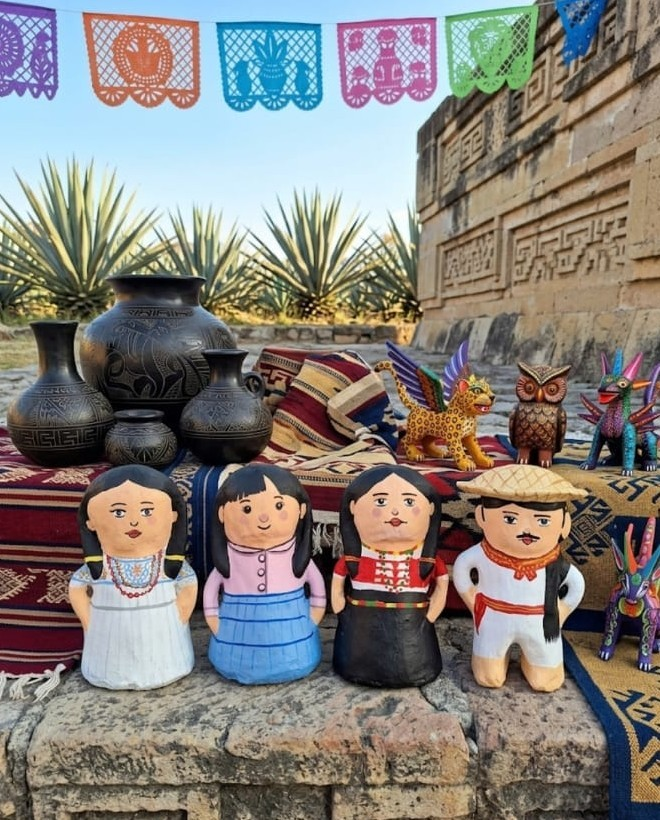

XOMELYN
Historias que perduran a través del barro, la tradición y la identidad cultural.
Cada muñeca representa la esencia de los pueblos mixtecos de Oaxaca, elaboradas artesanalmente y conectadas con narrativa digital mediante tecnología QR.

Historia y Origen
Cómo nace XOMELYN
XOMELYN es un proyecto artesanal y cultural enfocado en la elaboración de muñecas y muñecos de barro representando los trajes típicos y la identidad cultural de municipios de Oaxaca, especialmente de la región Mixteca. El proceso inicia con la investigación cultural de cada comunidad para conocer sus costumbres, tradiciones, vestimenta y elementos representativos. Posteriormente, los artesanos moldean el barro de manera manual, dando forma a cada pieza con técnicas tradicionales transmitidas de generación en generación. Después del secado y horneado, las figuras son pintadas artesanalmente con detalles característicos de cada municipio. Además de la elaboración artesanal, XOMELYN integra tecnología mediante códigos QR colocados en las piezas. Al escanearlos, los clientes pueden acceder a información digital sobre el origen de la muñeca, el significado del traje típico, las tradiciones del municipio y el proceso de elaboración. Esto permite combinar tradición e innovación, creando una experiencia cultural interactiva y educativa.
Origen del nombre XOMELYN
El nombre XOMELYN surge de la combinación creativa de los nombres de los integrantes del equipo que desarrolló el proyecto, representando la unión, creatividad y trabajo colaborativo dentro de esta propuesta artesanal y cultural.
¿Cómo se formó el nombre?
- XO → de Xochitlquetzal
- ME → de Margarita Emily
- L → de Luis y Lore
- YN → de Evelyn
Integrantes del proyecto
- Juárez Chávez Margarita Emily
- Luis Ángel Mendoza Coronel
- Miguel Cruz Evelyn
- Morales Bautista Xochitlquetzal
- Velasco Vásquez Lorena
De esta manera, el nombre XOMELYN no solo identifica a las muñecas artesanales, sino que también simboliza la unión del equipo y el esfuerzo colaborativo detrás del proyecto.
El nombre fue creado con la intención de brindar una identidad original, moderna y fácil de recordar, reflejando innovación sin perder la esencia artesanal y cultural de Oaxaca.
XOMELYN representa la unión entre tradición, identidad cultural y tecnología, elementos fundamentales dentro del proyecto de muñecas y muñecos de barro con narrativa digital y códigos QR.
Impacto e importancia de XOMELYN
XOMELYN tiene un impacto cultural, social, económico y turístico importante para las comunidades artesanales de Oaxaca, especialmente en la región Mixteca y municipios del distrito de Tlaxiaco.
Impacto cultural
El proyecto ayuda a preservar las tradiciones, costumbres e identidad de los municipios oaxaqueños mediante la representación de trajes típicos en muñecas de barro. Cada pieza funciona como un medio de transmisión cultural para nuevas generaciones y visitantes nacionales e internacionales.
Impacto social
XOMELYN fortalece el trabajo de los artesanos locales, impulsando oportunidades económicas y fomentando el reconocimiento del talento artesanal de la región Mixteca. También promueve el interés de jóvenes por conservar las tradiciones culturales y evitar la pérdida del patrimonio artesanal.
Impacto económico
El proyecto genera oportunidades de comercialización para talleres artesanales mediante ventas directas, ferias culturales, redes sociales y plataformas digitales. Asimismo, incrementa el valor percibido de las artesanías al integrar tecnología QR y narrativa digital.
Impacto turístico
Las piezas de XOMELYN ofrecen una experiencia cultural innovadora para turistas interesados en conocer la historia, tradiciones y riqueza cultural de Oaxaca. Esto contribuye al fortalecimiento del turismo cultural y artesanal de Tlaxiaco y otros municipios de la región.
Sobre Nosotros
Nuestra Misión
Preservar y difundir la identidad cultural de los municipios del distrito de Tlaxiaco mediante la elaboración artesanal de muñecas y muñecos de barro, integrando innovación tecnológica a través de narrativa digital y códigos QR, para ofrecer productos culturales auténticos, educativos y de valor turístico.
Nuestra Visión
Ser una marca artesanal reconocida a nivel regional, nacional e internacional por promover la cultura oaxaqueña mediante artesanías innovadoras que combinen tradición, arte y tecnología, fortaleciendo el desarrollo económico y cultural de las comunidades artesanales.
Valores que nos representan
- Identidad cultural: Respetamos y promovemos las tradiciones y costumbres de Oaxaca.
- Creatividad: Innovamos constantemente en el diseño y presentación de nuestras piezas.
- Compromiso: Trabajamos con responsabilidad para preservar el patrimonio artesanal.
- Autenticidad: Cada pieza refleja la esencia y originalidad de la cultura mixteca.
- Trabajo en equipo: Valoramos la colaboración entre artesanos, estudiantes y comunidades.
- Respeto: Reconocemos el valor del trabajo artesanal y de las comunidades culturales.
- Innovación: Integramos herramientas tecnológicas para fortalecer la difusión cultural.
¿Quién los elabora?
Las muñecas y muñecos artesanales de barro son elaborados de manera artesanal por artistas oaxaqueños comprometidos con la preservación de las tradiciones culturales de la región Mixteca.
Elaboración y moldeado artesanal
Encargado de la elaboración y moldeado artesanal de las muñecas de barro. Originario de Magdalena Peñasco, Oaxaca.
Pintado artesanal
Pintor artesanal encargado del proceso de decoración y detallado de las piezas. Originario de Heroica Ciudad de Tlaxiaco.
Galería